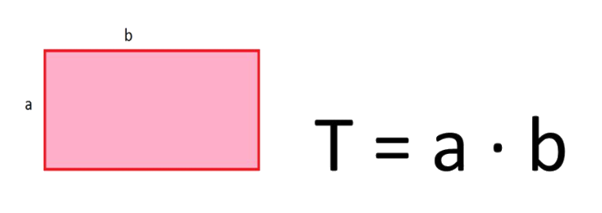

Kerület számítás
Kerület: a síkidomot határoló vonalak együttes hossza.
A téglalap kerületének megállapításához szükségünk lesz 2 oldalának hosszára. Ha mindkét oldal megvan, utána kiszámíthatjuk a kerületet:
K = 2 * (a * b)

Terület számítás
Terület: megmutatja, hogy mekkora helyet foglal el a síkból.
A téglalap területének megállapításához szükségünk lesz 2 oldalának hosszára. Ha mindkét oldal megvan, utána kiszámíthatjuk a területet:
T = a * b
